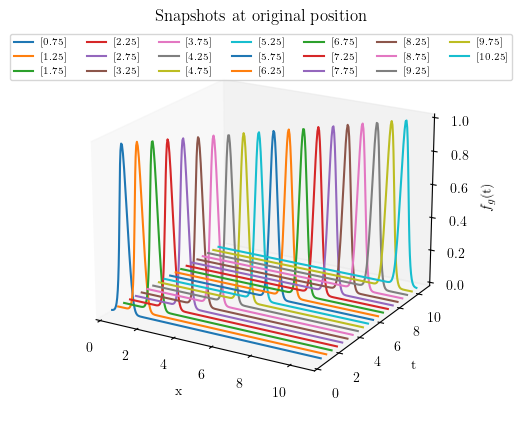
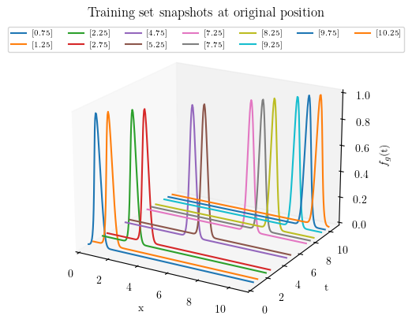
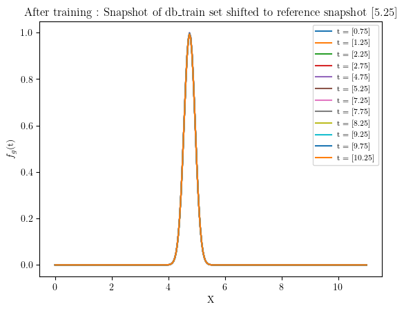
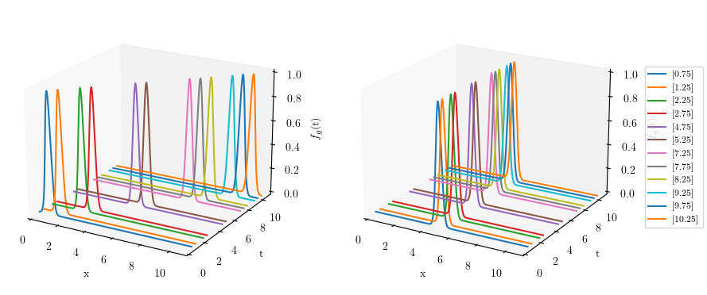
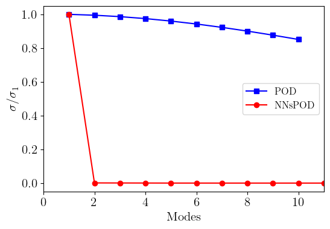
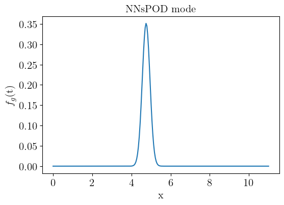
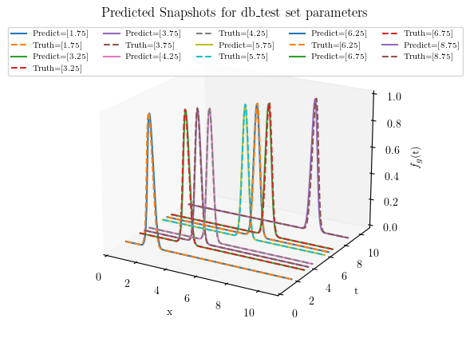

Using Plugin for implementing NNsPOD-ROM
In this tutorial we will explain how to use the NNsPOD-ROM algorithm implemented in EZyRB library.
NNsPOD algorithm is purely a data-driven machine learning method that seeks for an optimal mapping of the various snapshots to a reference configuration via an automatic detection [1] and seeking for the low-rank linear approximation subspace of the solution manifold. The nonlinear transformation of the manifold leads to an accelerated KnW decay, resulting in a low-dimensional linear approximation subspace, and enabling the construction of efficient and accurate reduced order models. The complete workflow of the NNsPOD-ROM algorithm, comprising of both the offline and online phases is presented in [2].
References:
[1] Papapicco, D., Demo, N., Girfoglio, M., Stabile, G., & Rozza, G.(2022). The Neural Network shifted-proper orthogonal decomposition: A machine learning approach for non-linear reduction of hyperbolic equations.Computer Methods in Applied Mechanics and Engineering, 392, 114687 - https://doi.org/10.1016/j.cma.2022.114687
[2] Gowrachari, H., Demo, N., Stabile, G., & Rozza, G. (2024). Non-intrusive model reduction of advection-dominated hyperbolic problems using neural network shift augmented manifold transformations. arXiv preprint - https://arxiv.org/abs/2407.18419.
Problem defintion
We consider 1D gaussian distribution functions, in wihch \(x\) is random variable, $ :raw-latex:`\mu `$ is mean and $ :raw-latex:`sigma`^2 $ is variance, where $ :raw-latex:`sigma `$ is the standard deviation or the width of gaussian.
To mimic travelling waves, here we parameterize the mean \(\mu\) values, where changing \(\mu\) shifts the distribution along x-axis,
Initial setting
First of all import the required packages: We need the standard Numpy, Torch, Matplotlib, and some classes from EZyRB.
numpy:to handle arrays and matrices we will be working with.torch:to enable the usage of Neural Networksmatplotlib:to handle the plotting environment.
From EZyRB we need: 1. The ROM class, which performs the model
order reduction process. 2. A module such as Database, where the
matrices of snapshots and parameters are stored. 3. A dimensionality
reduction method such as Proper Orthogonal Decomposition POD 4. An
interpolation method to obtain an approximation for the parametric
solution for a new set of parameters such as the Radial Basis Function
RBF, or Multidimensional Linear Interpolator Linear.
import numpy as np
import torch
from scipy import spatial
from matplotlib import pyplot as plt
from ezyrb import POD, RBF, Database, Snapshot, Parameter, Linear, ANN
from ezyrb import ReducedOrderModel as ROM
from ezyrb.plugin import AutomaticShiftSnapshots
def gaussian(x, mu, sig):
return np.exp(-np.power(x - mu, 2.) / (2 * np.power(sig, 2.)))
def wave(t, res=256):
x = np.linspace(0, 11, res)
return x, gaussian(x, t, 0.2).T # parameterizing mean value
Offline phase
In this case, we obtain 15 snapshots from the analytical model.
n_params = 20
params = np.linspace(0.75, 10.25, n_params).reshape(-1, 1)
pod = POD(rank=1)
rbf = RBF()
db = Database()
for param in params:
space, values = wave(param)
snap = Snapshot(values=values.T, space=space)
db.add(Parameter(param), snap)
print("Snapshot shape : ", db.snapshots_matrix.shape)
print("Parameter shape : ", db.parameters_matrix.shape)
Snapshot shape : (20, 256)
Parameter shape : (20, 1)
db_train, db_test = db.split([0.7,0.3])
print("Lenght of training data set:", len(db_train))
print(f"Parameters of training set: \n {db_train.parameters_matrix.flatten()}")
print("Lenght of test data set:", len(db_test))
print(f"Parameters of testing set: \n {db_test.parameters_matrix.flatten()}")
Lenght of training data set: 12
Parameters of training set:
[ 0.75 1.25 2.25 2.75 4.75 5.25 7.25 7.75 8.25 9.25 9.75 10.25]
Lenght of test data set: 8
Parameters of testing set:
[1.75 3.25 3.75 4.25 5.75 6.25 6.75 8.75]
plt.rcParams.update({
"text.usetex": True,
"font.family": "serif",
"font.serif": ["Times New Roman"],
})
fig1 = plt.figure(figsize=(5,5))
ax = fig1.add_subplot(111,projection='3d')
for param in params:
space, values = wave(param)
snap = Snapshot(values=values.T, space=space)
ax.plot(space, param*np.ones(space.shape), values, label = f"{param}")
ax.set_xlabel('x')
ax.set_ylabel('t')
ax.set_zlabel('$f_{g}$(t)')
ax.set_xlim(0,11)
ax.set_ylim(0,11)
ax.set_zlim(0,1)
ax.legend(loc="upper center", ncol=7, prop = { "size": 7})
ax.grid(False)
ax.view_init(elev=20, azim=-60, roll=0)
ax.set_title("Snapshots at original position")
plt.show()

#%% 3D PLOT : db_train snpashots at original position
fig2 = plt.figure(figsize=(5,5))
ax = fig2.add_subplot(111, projection='3d')
for i in range(len(db_train)):
ax.plot(space,(db_train.parameters_matrix[i]*np.ones(space.shape)), db_train.snapshots_matrix[i], label = db_train.parameters_matrix[i])
ax.set_xlabel('x')
ax.set_ylabel('t')
ax.set_zlabel('$f_{g}$(t)')
ax.set_xlim(0,11)
ax.set_ylim(0,11)
ax.set_zlim(0,1)
ax.legend(loc="upper center", ncol=7, prop = { "size": 7})
ax.grid(False)
ax.view_init(elev=20, azim=-60, roll=0)
ax.set_title("Training set snapshots at original position")
plt.show()

InterpNet: must learn the reference configuration in the best
possible way w.r.t its grid point distribution such that it will be able
to reconstruct field values for every shifted centroid disrtribution.
ShiftNet: will learn the shift operator for a given problem, which
quantifies the optimal-shift, resulting in shifted space that transports
all the snapshots to the reference frame.
Training: The training of ShiftNet and InterpNet are seperated with
the latter being trained first. Once the network has learned the
best-possible reconstruct of the solution field of the reference
configuration, its forward map will be used for the training of Shiftnet
as well, in a cascaded fashion. For this reason, we must optimise the
loss of interpnet considerably more than ShiftNet’s.
torch.manual_seed(1)
interp = ANN([10,10], torch.nn.Softplus(), [1e-6, 200000], frequency_print=1000, lr=0.03)
shift = ANN([], torch.nn.LeakyReLU(), [1e-4, 10000], optimizer=torch.optim.Adam, frequency_print=500, l2_regularization=0, lr=0.0023)
rom = ROM(
database=db_train,
reduction=pod,
approximation=rbf,
plugins=[
AutomaticShiftSnapshots(
shift_network= shift,
interp_network=interp,
interpolator=Linear(fill_value=0),
reference_index=4,
parameter_index=4,
barycenter_loss=20.)
]
)
rom.fit()
[epoch 1] 9.325559e-02
[epoch 1000] 1.529361e-03
[epoch 2000] 4.970222e-04
[epoch 3000] 4.387998e-04
[epoch 4000] 4.628130e-04
[epoch 5000] 3.835012e-04
[epoch 6000] 3.140604e-04
[epoch 7000] 3.919086e-04
[epoch 8000] 4.268886e-04
[epoch 9000] 9.304365e-05
[epoch 10000] 4.048840e-04
[epoch 11000] 3.448661e-04
[epoch 12000] 1.810824e-04
[epoch 13000] 1.608639e-04
[epoch 14000] 1.410103e-04
[epoch 15000] 1.369342e-04
[epoch 16000] 3.215274e-04
[epoch 17000] 1.686200e-05
[epoch 18000] 1.850619e-04
[epoch 19000] 5.792178e-05
[epoch 20000] 1.031569e-05
[epoch 21000] 5.006416e-04
[epoch 22000] 7.024280e-06
[epoch 23000] 3.728175e-06
[epoch 24000] 2.684203e-06
[epoch 25000] 2.088043e-05
[epoch 26000] 2.364460e-05
[epoch 27000] 5.422693e-05
[epoch 28000] 8.736612e-06
[epoch 29000] 1.406125e-03
[epoch 29941] 9.978612e-07
[epoch 1] 1.996005e+01
[epoch 500] 3.647174e+00
[epoch 1000] 2.648998e+00
[epoch 1500] 1.878768e+00
[epoch 2000] 1.296257e+00
[epoch 2500] 8.012146e-01
[epoch 3000] 3.615186e-01
[epoch 3500] 8.892784e-03
[epoch 4000] 4.733771e-03
[epoch 4500] 2.296455e-03
[epoch 5000] 9.881203e-04
[epoch 5500] 3.655896e-04
[epoch 6000] 1.145256e-04
[epoch 6055] 9.997654e-05
<ezyrb.reducedordermodel.ReducedOrderModel at 0x7f70089f4a90>
#%% Snapshots shifted reference position after training
for i in range(len(db_train.parameters_matrix)):
plt.plot(space, rom.shifted_database.snapshots_matrix[i], label = f"t = {db_train.parameters_matrix[i]}") #rom._shifted_reference_database.parameters_matrix
plt.legend(prop={'size': 8})
plt.ylabel('$f_{g}$(t)')
plt.xlabel('X')
plt.title(f'After training : Snapshot of db_train set shifted to reference snapshot {db_train.parameters_matrix[5]}')
plt.show()

Showing the snapshots before (left) and after pre-processing (right) of solution manifold
fig3 = plt.figure(figsize=(10, 5))
# First subplot
ax1 = fig3.add_subplot(121, projection='3d')
for i in range(len(db_train)):
ax1.plot(space, (db_train.parameters_matrix[i] * np.ones(space.shape)), db_train.snapshots_matrix[i])
ax1.set_xlabel('x')
ax1.set_ylabel('t')
ax1.set_zlabel('$f_{g}$(t)')
ax1.set_xlim(0,11)
ax1.set_ylim(0,11)
ax1.set_zlim(0,1)
ax1.grid(False)
ax1.view_init(elev=20, azim=-60, roll=0)
# Second subplot
ax2 = fig3.add_subplot(122, projection='3d')
for i in range(len(rom.shifted_database)):
ax2.plot(space, (rom.shifted_database.parameters_matrix[i] * np.ones(space.shape)),
rom.shifted_database.snapshots_matrix[i], label=rom.shifted_database.parameters_matrix[i])
ax2.set_xlabel('x')
ax2.set_ylabel('t')
ax2.set_zlabel('$f_{g}$(t)')
ax2.set_xlim(0, 11)
ax2.set_ylim(0, 11)
ax2.set_zlim(0, 1)
ax2.grid(False)
ax2.view_init(elev=20, azim=-60, roll=0)
handles, labels = ax2.get_legend_handles_labels()
fig3.legend(handles, labels, loc='center right', ncol=1, prop={'size': 8})
plt.show()

#%% Singular values of original snapshots and shifted snapshots
U, s = np.linalg.svd(db.snapshots_matrix.T, full_matrices=False)[:2]
N_modes = np.linspace(1, len(s),len(s))
# Singular values of shifted snapshots
U_shifted , s_shifted = np.linalg.svd(rom.shifted_database.snapshots_matrix.T, full_matrices=False)[:2]
N_modes_shifted = np.linspace(1, len(s_shifted),len(s_shifted))
# Compare singular values
plt.figure(figsize=(6,4))
plt.plot(N_modes[:10], s[:10]/np.max(s),"-s",color = "blue", label='POD')
plt.plot(N_modes_shifted, s_shifted/np.max(s_shifted),"-o", color = "red", label='NNsPOD')
plt.ylabel('$\sigma/\sigma_{1}$', size=15)
plt.xlabel('Modes', size=15)
plt.xlim(0, 11)
plt.legend(fontsize=12)
plt.xticks(fontsize=15)
plt.yticks(fontsize=15)
plt.show()

#%% POD MODES
modes = pod.modes
plt.figure(figsize=(6,4))
plt.plot(space, modes*-1)
plt.ylabel('$f_{g}$(t)', size=15)
plt.xlabel('x', size=15)
plt.title('NNsPOD mode', size=15)
plt.xticks(fontsize=15)
plt.yticks(fontsize=15)
plt.show()

Online phase
#%% Test set predictions using NNsPOD
pred = rom.predict(db_test.parameters_matrix) # Calculate predicted solution for given mu
fig5 = plt.figure(figsize=(5,5))
ax = fig5.add_subplot(111, projection='3d')
for i in range(len(pred)):
space, orig = wave(db_test.parameters_matrix[i])
ax.plot(space,(db_test.parameters_matrix[i]*np.ones(space.shape)), pred.snapshots_matrix[i], label = f'Predict={db_test.parameters_matrix[i]}')
ax.plot(space,(db_test.parameters_matrix[i]*np.ones(space.shape)), orig, '--', label = f'Truth={db_test.parameters_matrix[i]}')
ax.set_xlabel('x')
ax.set_ylabel('t')
ax.set_zlabel('$f_{g}$(t)')
ax.set_xlim(0,11)
ax.set_ylim(0,11)
ax.set_zlim(0,1)
ax.legend(loc="upper center", ncol=5, prop = { "size": 7})
ax.grid(False)
ax.view_init(elev=20, azim=-60, roll=0)
ax.set_title('Predicted Snapshots for db_test set parameters')
plt.show()

#%% Reconstruction and prediction error
train_err = rom.test_error(db_train)
test_err = rom.test_error(db_test)
print('Mean Train error: ', train_err)
print('Mean Test error: ', test_err)
Mean Train error: 0.18585298603714098
Mean Test error: 0.11119321870633797